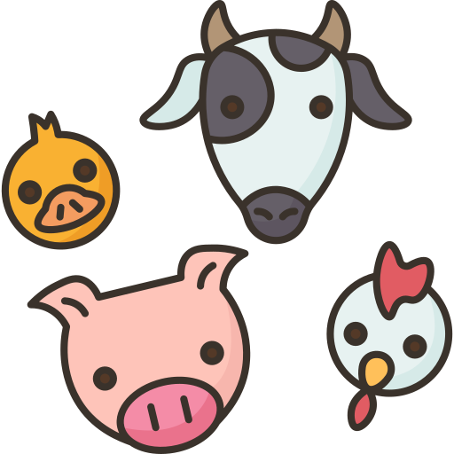

<ion-content noscroll>
  <ion-grid style="height: 10%; display: flex; flex-flow: column;"> 
    <ion-row style="flex-grow: 1;">
      <ion-col style="border-bottom: 3px solid rgba(0, 0, 0, 0.534) ;">

      </ion-col>
    </ion-row>
  </ion-grid>
  <ion-fab vertical="top" horizontal="start" slot="fixed">
    <ion-fab-button>
       
       
       
    </ion-fab-button>
    <ion-fab-list side="end">
      <ion-fab-button *ngIf="!portugues"></ion-fab-button>
      <ion-fab-button *ngIf="!english"></ion-fab-button>
      <ion-fab-button *ngIf="!espanol"></ion-fab-button>
    </ion-fab-list>
  </ion-fab>
  <ion-fab vertical="top" horizontal="end" slot="fixed">
    <ion-fab-button color="dark">
       
       
        
    </ion-fab-button>
    <ion-fab-list side="start" color="dark">
      <ion-fab-button color="dark" *ngIf="!animales"></ion-fab-button>
      <ion-fab-button color="dark" *ngIf="!numeros"> </ion-fab-button>
      <ion-fab-button color="dark" *ngIf="!colores"> </ion-fab-button>
    </ion-fab-list>
  </ion-fab>
    <app-colores *ngIf="colores" (colores)="elegirAudio($event)"></app-colores>
    <app-numeros *ngIf="numeros" (numeros)="elegirAudio($event)"></app-numeros>
    <app-animales *ngIf="animales" (animales)="elegirAudio($event)"></app-animales>
    <ion-spinner *ngIf="apretado" name="crescent"  color="light" style="display: block; margin:auto;width: 2px; height: 2px; position:inherit;"></ion-spinner>

<ion-fab vertical="bottom" horizontal="end" slot="fixed">
  <ion-fab-button color="dark">
    <ion-icon name="settings-outline"></ion-icon>
  </ion-fab-button>
  <ion-fab-list side="top">
    <ion-fab-button (click)="logOut()"><ion-icon name="return-down-back-outline"></ion-icon></ion-fab-button>
  </ion-fab-list>
</ion-fab>
</ion-content>